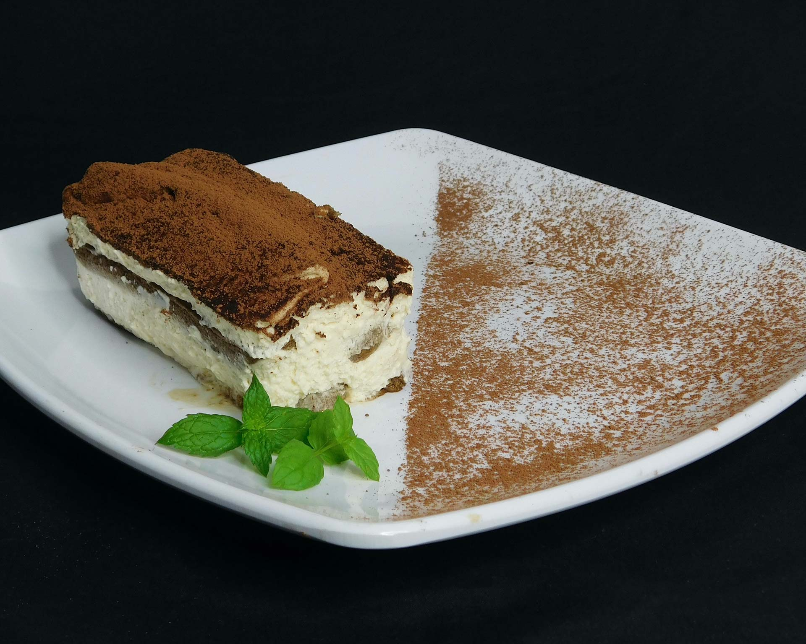

Other recepies
Difficulty: Easy
#tiramisu #italian #dessert
Tiramisu is one of the cornerstones of Italian cuisine, one of the best-loved and most frequently made desserts in the entire world.
Ingredients
- Mascarpone cheese, 750g
- Eggs, 5
- Ladyfingers, 250g
- Sugar, 120g
- Coffee, 300g
Instructions
- Separate the eggs, being careful to keep the whites totally free of yolk. Beat the yolks with a hand mixer, adding half of the sugar, add the mascarpone a little at a time.
- Set the cream aside. Clean the mixer well and move on to whipping the egg whites. Once they're foamy, pour in the remaining sugar a little at a time.
- Take a spoonful of the whites and add it to the bowl with the mascarpone cream, then stir vigorously with a spatula to dilute the mixture. Next, add the rest of the egg whites little by little, folding them in by mixing very gently from the bottom upwards.
- Spread a heaping spoonful on the bottom of a glass baking dish. Dip the ladyfingers into the cold coffee for under a second. Then arrange the coffee-soaked ladyfingers in the dish.
- Add another layer of mascarpone cream and level it so the cookies are covered completely. Continue in layers.
- Sprinkle over sliced chocolate, and leave the tiramisu to set in the fridge for a couple of hours. Your tiramisu is ready to be enjoyed!